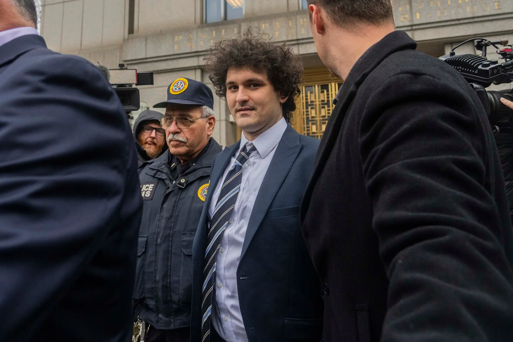

Crypto Fraud Trial
Sam Bankman-Fried’s Crypto Empire Was ‘Built on Lies,’ Prosecutor Says
The FTX founder’s trial opened with allegations that he looted billions of dollars in customer money to fund his lavish lifestyle. A defense lawyer told jurors the crypto mogul made mistakes but acted “in good faith.”

‘Lied to the World’ or Acted in ‘Good Faith’: Sam Bankman-Fried’s Trial Opens
Federal prosecutors on Wednesday opened the criminal trial of Sam Bankman-Fried, the founder of the failed cryptocurrency exchange FTX, with a simple message: He deliberately “lied to the world,” leading to one of the biggest financial frauds of a generation.
Mr. Bankman-Fried’s lawyer advanced a far different narrative. The former crypto mogul, the lawyer said, was simply a well-intentioned entrepreneur who acted “in good faith” to make his firm successful, with no intention to defraud anyone.